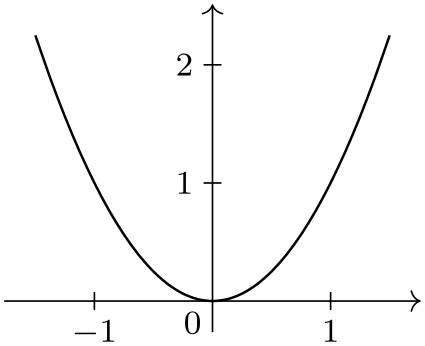

The TikZ and PGF Packages
Manual for version 3.1.10
Data Visualization
81 Providing Data for a Data Visualization¶
81.1 Overview¶
The data visualization system needs a stream of data points as input. These data points can be directly generated by repeatedly calling the \pgfdatapoint command, but usually data is available in some special (text) format and one would like to visualize this data. The present section explains how data in some specific format can be fed to the data visualization system.
This section starts with an explanation of the main concepts. Then, the standard formats are listed in the reference section. It is also possible to define new formats, but this an advanced concept which requires an understanding of some of the internals of the parsing mechanism, explained in Section 81.5, and the usage of a rather low-level command, explained in Section 81.6.
81.2 Concepts¶
For the purposes of this section, let call a data format some standardized way of writing down a list of data points. A simple example of a data format is the csv format (the acronym stands for comma separated values), where each line contains a data point, specified by values separated by commas. A different format is the key–value format, where data points are specified by lists of key–value pairs. A far more complex format is the pdb-format used by the protein database to describe molecules.
The data visualization system does not use any specific format. Instead, whenever data is read by the data visualization system, you must specify a format parser (or it is chosen automatically for you). It is the job of the parser to read (parse) the data lines and to turn them into data points, that is, to setup appropriate subkeys of /data point/.
To give a concrete example, suppose a file contains the following lines:
This file is in the csv-format. This format can be read by the table parser (which is called thus, rather than “csv”, since it can also read files in which the columns are separated by, say, a semicolon or a space). The table format will then read the data and for each line of the data, except for the headline of course, it will produce one data point. For instance, for the last data point the key /data point/x will be set to 0, the key /data point/y will be set to 1, and the key /data point/z will be set to 0.5.
All parsers are basically line-oriented. This means that, normally, each line in the input data should contain one data point. This rule may not always apply, for instance empty lines are typically ignored and sometimes a data point may span several lines, but deviating from this “one data point per line” rule makes parsers harder to program.
81.3 Reference: Built-In Formats¶
The following format is the default format, when no format=... is specified.
-
Format table ¶
-
/pgf/data/separator=⟨character⟩ (no default, initially ,) ¶
-
/pgf/data/headline=⟨headline⟩(no default) ¶
This format is used to parse data that is formatted in the following manner: Basically, each line consists of values that are separated by a separator like a comma or a space. The values are stored in different attributes, that is, subkeys of /data point like /data point/x. In order to decide which attribute is chosen for a give value, the headline is important. This is the first non-empty line of a table. It is formatted in the same way as normal data lines (value separated by the separator), but the meaning of the values is different: The first value in the headline is the name of the attribute where the first values in the following lines should go each time. Similarly, the second value in the headline is the name of the attribute for the second values in the following lines, and so on.
A simple example is the following:
The headline states that the values in the first column should be stored in the angle attribute (/data point/angle to be precise) and that the values in the second column should be stored in the radius attribute. There are four data points in this data set.
The format will tolerate too few or too many values in a line. If there are less values in a line than in the headline, the last attributes will simply be empty. If there are more values in a line than in the headline, the values are stored in attributes called /data point/attribute ⟨column number⟩, where the first value of a line gets ⟨column number⟩ equal to 1 and so on.
The table format can be configured using the following options:
Use this key to change which character is used to separate values in the headline and in the data lines. To set the separator to a space, either set this key to an empty value or say separator=\space. Note that you must surround a comma by curly braces if you which to (re)set the separator character to a space.
\usetikzlibrary {datavisualization}
\begin{tikzpicture}
\datavisualization [school book axes, visualize as line]
data
[separator=\space] {
x
y
0
0
1
1
2
1
3
0
}
data
[separator=;] {
x; y; z
3; 1; 0
2; 2; 0
};
\end{tikzpicture}
When this key is set to a non-empty value, the value of ⟨headline⟩ is used as the headline and the first line of the data is treated as a normal line rather than as a headline.

\usetikzlibrary {datavisualization}
\begin{tikzpicture}
\datavisualization [school book axes, visualize as line]
data
[headline={x, y}] {
0, 0
1, 1
2, 1
3, 0
};
\end{tikzpicture}
-
Format named ¶
Basically, each line of the data must consist of a comma-separated sequence of attribute–values pairs like x=5, lo=500. This will cause the attribute /data point/x to be set to 5 and /data point/lo to be set to 500.

\usetikzlibrary {datavisualization}
\begin{tikzpicture}
\datavisualization [school book axes, visualize as line]
data
[format=named] {
x=0, y=0
x=1, y=1
x=2, y=1
x=3, y=0
};
\end{tikzpicture}
However, instead of just specifying a single value for an attribute as in x=5, you may also specify a whole set of values as in x={1,2,3}. In this case, three data points will be created, one for each value in the list. Indeed, the \foreach statement is used to iterate over the list of values, so you can write things like x={1,...,5}.
It is also permissible to specify lists of values for more than one attribute. In this case, a data point is created for each possible combination of values in the different lists:
\usetikzlibrary {datavisualization}
\tikz \datavisualization
[scientific axes=clean,
visualize as scatter/.list={a,b,c},
style sheet=cross marks]
data
[format=named] {
x=0, y={1,2,3}, set=a
x={2,3,4}, y={3,4,5,7}, set=b
x=6, y={5,7,...,15}, set=c
};
-
Format TeX code ¶
This format will simply execute each line of the data, each of which should contain some normal TeX code. Note that at the end of each line control returns to the format handler, so for instance the arguments of a command may not be spread over several lines. However, not each line needs to produce a data point.
\usetikzlibrary {datavisualization}
\begin{tikzpicture}
\datavisualization [school book axes, visualize as line]
data
[format=TeX code] {
\pgfkeys{/data point/.cd,x=0, y=0} \pgfdatapoint
\pgfkeys{/data point/.cd,x=1, y=1} \pgfdatapoint
\pgfkeys{/data point/x=2} \pgfdatapoint
\pgfkeyssetvalue{/data
point/x}{3}
\pgfkeyssetvalue{/data
point/y}{0} \pgfdatapoint
};
\end{tikzpicture}
81.4 Reference: Advanced Formats¶
-
TikZ Library datavisualization.formats.functions ¶
-
Format function ¶
-
1. var ⟨variable⟩ : interval[⟨low⟩:⟨high⟩] samples ⟨number⟩;
-
2. var ⟨variable⟩ : interval[⟨low⟩:⟨high⟩] step ⟨step⟩;
-
3. var ⟨variable⟩ : {⟨values⟩};
-
/pgf/data/samples=⟨number⟩ (no default, initially 25) ¶
-
\value{⟨variable⟩} ¶
\usetikzlibrary{datavisualization.formats.functions} %
LaTeX
and plain
TeX
\usetikzlibrary[datavisualization.formats.functions] % ConTeXt
This library defines the formats described in the following,
which allow you to specify the data points indirectly, namely
via a to-be-evaluated function.
This format allows you to specify a function that is then evaluated in order to create the desired data points. In other words, the data lines do not contain the data itself, but rather a functional description of the data.
The format used to specify the function works as follows: Each nonempty line of the data should contain at least one of either a variable declaration or a function declaration. A variable declaration signals that a certain attribute will range over a given interval. The function declarations will then, later, be evaluated for values inside this interval. The syntax for a variable declaration is one of the following:
In the first case, if the optional samples part is missing, the number of samples is taken from the value stored in the following key:
Sets the number of samples to be used when no sample number is specified.
The meaning of declaring a variable declaration to range over an interval is that the attribute named ⟨variable⟩, that is, the key /data point/⟨variable⟩, will range over the interval \([\meta {low},\meta {high}]\). If the number of samples is given (directly or indirectly), the interval is evenly divided into ⟨number⟩ many points and the attribute is set to each of these values. Similarly, when a ⟨step⟩ is specified, this stepping is used to increase ⟨low⟩ iteratively up to the largest value that is still less or equal to ⟨high⟩.
The meaning of declaring a variable using a list of ⟨values⟩ is that the variable will simply iterate over the values using \foreach.
You can specify more than one variable. In this case, each variable is varied independently of the other variables. For instance, if you declare an \(x\)-variable to range over the interval \([0,1]\) in \(25\) steps and you also declare a \(y\)-variable to range over the same interval, you get a total of \(625\) value pairs.
The variable declarations specify which (input) variables will take which values. It is the job of the function declarations to specify how some additional attributes are to be computed. The syntax of a function declaration is as follows:
func ⟨attribute⟩ = ⟨expression⟩;
The meaning of such a declaration is the following: For each setting of the input variables (the variables specified using the var declaration), evaluate the ⟨expression⟩ using the standard mathematical parser of TikZ. The resulting value is then stored in /data point/⟨attribute⟩.
Inside ⟨expression⟩ you can reference data point attributes using the following command, which is only defined inside such an expression:
This expands to the current value of the key /data point/⟨variable⟩.
There can be multiple function declarations in a single data specification. In this case, all of these functions will be evaluated for each setting of input variables.

\usetikzlibrary {datavisualization.formats.functions}
\tikz
\datavisualization [school book axes, visualize as smooth line]
data
[format=function] {
var
x
:
interval
[-1.5:1.5];
func
y
=
\value x
*
\value x;
};
\usetikzlibrary {datavisualization.formats.functions}
\tikz \datavisualization [
scientific axes=clean,
y axis={ticks={style={
/pgf/number
format/fixed,
/pgf/number
format/fixed
zerofill,
/pgf/number
format/precision=2}}},
x axis={ticks={tick suffix=${}^\circ$}},
visualize as smooth line/.list={1,2,3,4,5,6},
style sheet=vary hue]
data
[format=function] {
var
set
:
{1,...,6};
var
x
:
interval
[0:50];
func
y
=
sin(\value x * (\value{set}+10))/(\value{set}+5);
};
81.5 Advanced: The Data Parsing Process¶
Whenever data is fed to the data visualization system, it will be handled by the \pgfdata command, declared in the datavisualization module. The command is both used to parse data stored in external sources (that is, in external files or which is produced on the fly by calling an external command) as well as data given inline. A data format does not need to know whether data comes from a file or is given inline, the \pgfdata command will take care of this.
Since TeX will always read files in a line-wise fashion, data is always fed to data format parsers in such a fashion. Thus, even it would make more sense for a format to ignore line-breaks, the parser must still handle data given line-by-line.
Let us now have a look at how \pgfdata works.
-
\pgfdata[⟨options⟩]{⟨inline data⟩} ¶
-
/pgf/data/read from file=⟨filename⟩ (no default, initially empty)
-
/pgf/data/inline(no value) ¶
-
/pgf/data/format=⟨format⟩ (no default, initially table)
-
/pgf/every data(style, no value) ¶
-
• In case you have specified an external source, the data visualization object is told (by means of invoking the add data method) that it should (later) read data from the file specified by the source key using the format specified by the format key. The file is not read at this point, but only later during the actual visualization.
-
• Otherwise, namely when data is given inline, depending on which format is used, some catcodes get changed. This is necessary since TeX’s special characters are often not-so-special in a certain format.
Independently of the format, the end-of-line character (carriage return) is made an active character.
Finally, the ⟨inline data⟩ is then read as a normal argument and the data visualization object is told that later on it should parse this data using the given format parser. Note that in this case the data visualization object must store the whole data internally.
-
1. The catcodes are setup according to what the data format requires.
-
2. Format-specific startup code gets called, which can initialize internal variables of the parsing process. (The catcode changes are not part of the startup code since in order to read inline data \pgfdata must be able to setup to temporarily setup the catcodes needed later on by the parsers, but since no reading is to be done, no startup code should be called at this point.)
-
3. For each line of the data a format-specific code handler, which depends on the data format, is called. This handler gets the current line as input and should call \pgfdatapoint once for each data point that is encoded by this line (a line might define multiple data points or none at all). Empty lines are handled by special format-specific code.
-
4. At the end, format-specific end code is executed.
-
/pgf/data/new set=⟨name⟩(no default) ¶
-
/pgf/data/store in set=⟨name⟩(no default) ¶
-
/pgf/data/use set=⟨name⟩(no default) ¶
This command is used to feed data to the visualization pipeline. This command can only be used when a data visualization object has been properly setup, see Section 80.
Basic options. The \pgfdata command may be followed by ⟨options⟩, which are executed with the path /pgf/data/. Depending on these options, the ⟨options⟩ may either be followed by ⟨inline data⟩ or, alternatively, no ⟨inline data⟩ is present and the data is read from an external source.
The first important option is ⟨source⟩, which governs which of these two alternatives applies:
If you set the read from file attribute to a non-empty ⟨filename⟩, the data will be read from this file. In this case, no ⟨inline data⟩ may be present, not even empty curly braces should be provided. If read from file is empty, the data must directly follow as ⟨inline data⟩.
% Data is read from two external files:
\pgfdata[format=table, read from file=file1.csv]
\pgfdata[format=table, read from file=file2.csv]
This is a shorthand file read from file={}. You can add this to make it clear(er) to the reader that data follows inline.
The second important key is format, which is used to specify the data format:
Use this key to locally set the format used for parsing the data. The ⟨format⟩ must be a format that has been previously declared using the \pgfdeclaredataformat command. See the reference section for a list of the predefined formats.
In case all your data is in a certain format, you may wish to generally set the above key somewhere at the beginning of your file. Alternatively, you can use the following style to setup the format key and possibly further keys concerning the data format:
This style is executed by \pgfdata before the ⟨options⟩ are parsed.
Note that the path of this key is just /pgf/, not /pgf/data/. Also note that TikZ internally sets the value of this key up in such a way that the keys /tikz/every data and also /tikz/data visualization/every data are executed. The bottom line of this is that when using TikZ, you should not set this key directly, set /tikz/every data instead.
Gathering of the data. Once the data format and the source have been decided upon, the data is “gathered”. During this phase the data is not actually parsed in detail, but just gathered so that it can later be parsed during the visualization. There are two different ways in which the data is gathered:
In both cases the “data visualization object” is the object stored in the /pgf/data visualization/obj key.
Parsing of the data. During the actual data visualization, all code that has been added to the data visualization object by means of the add data method is executed several times. It is the job of this code to call the \pgfdatapoint method for all data points present in the data.
When the \pgfdata method calls add data, the code that is passed to the data visualization object is just a call to internal macros of \pgfdata, which are able to parse the data stored in an external file or in the inlined data. Independently of where the data is stored, these macros always do the following:
For an example of how this works, see the description of the \pgfdeclaredataformat command.
Data sets. There are three options that allow you to create data sets. Such a data set is essentially a macro that stores a pre-parsed set of data that can be used multiple times in subsequent visualizations (or even in the same visualization).
Creates an empty data set called ⟨name⟩. If a data set of the same name already exists, it is overwritten and made empty. Data sets are global.
When this key is set to any non-empty ⟨name⟩ and if this ⟨name⟩ has previously been used with the new set key, then the following happens: For the current \pgfdata command, all parsed data is not passed to the rendering pipeline. Instead, the parsed data is appended to the data set ⟨name⟩. This includes all options parsed to the \pgfdata command, which is why neither this key nor the previous key should be passed as options to a \pgfdata command.
This works similar to read from file. When this key is used with a \pgfdata command, no inline data may follow. Instead, the data stored in the data set ⟨name⟩ is used.
81.6 Advanced: Defining New Formats¶
In order to define a new data format you can use the following command, which is basic layer command defined in the module datavisualization:
-
\pgfdeclaredataformat{⟨format name⟩}{⟨catcode code⟩}{⟨startup code⟩}{⟨line arguments⟩}
{⟨line code⟩}{⟨empty line code⟩}{⟨end code⟩} ¶ -
1. The ⟨catcode code⟩ is executed. This code should just contain catcode changes. The ⟨catcode code⟩ will also be executed when inline data is read.
-
2. Next, the ⟨startup code⟩ is executed.
-
3. Next, for each non-empty line of the data, the line is passed to a macro whose argument list is given by ⟨line arguments⟩ and whose body is given by ⟨line code⟩. The idea is that you can use TeX’s powerful pattern matching capabilities to parse the non-empty lines. See also the below example.
-
4. Empty lines are not processed by the ⟨line code⟩, but rather by the ⟨empty line code⟩. Typically, empty lines can simply be ignored and in this case you can let this parameter be empty.
-
5. At the end of the data, the ⟨end code⟩ is executed.
This command defines a new data format called ⟨format name⟩, which can subsequently be used in the \pgfdata command. (The TikZ’s data maps directly to \pgfdata, so the following applies to TikZ as well.)
As explained in the description of the \pgfdata command, when data is being parsed that is formatted according to ⟨format name⟩, the following happens:
As an example, let us now define a simple data format for reading files formatted in the following manner: Each line should contain a coordinate pair as in (1.2,3.2), so two numbers separated by a comma and surrounded by parentheses. To make things more interesting, suppose that the hash mark symbol can be used to indicate comments. Here is an example of some data given in this format:
A format parser for this format could be defined as follows:
\pgfdeclaredataformat{coordinates}
% First comes the catcode argument. We turn the hash mark
into a comment character.
{\catcode`\#=14\relax}
% Second comes the startup code. Since we do not need to
setup things, we can leave
% it empty. Note that we could also set it to something
like \begingroup, provided we
% put an \endgroup in the end code
{}
% Now comes the arguments for non-empty lines. Well,
these should be of the form
% (#1,#2), so we specify that:
{(#1,#2)}
% Now we must do something with a line of this form. We
store the #1 argument in
% /data point/x and #2 in /data point/y. Then we call
\pgfdatapoint to create a data point.
{
\pgfkeyssetvalue{/data
point/x}{#1}
\pgfkeyssetvalue{/data
point/y}{#2}
\pgfdatapoint
}
% We ignore empty lines:
{}
% And we also have no end-of-line code.
{}
This format could now be used as follows:
\begin{tikzpicture}
\datavisualization[school book axes, visualize as smooth line]
data
[format=coordinates] {
#
This
is
some
data
formatted
according
#
to
the
"coordinates"
format
(0,0)
(0.5,0.25)
(1,1)
(1.5,2.25)
(2,4)
};
\end{tikzpicture}